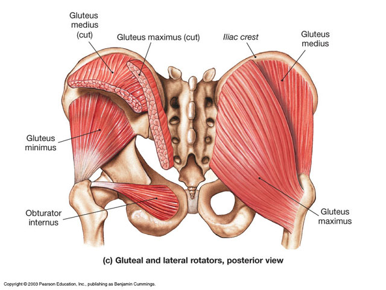
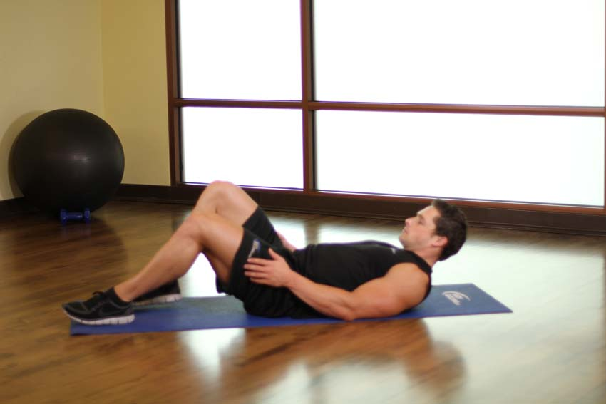
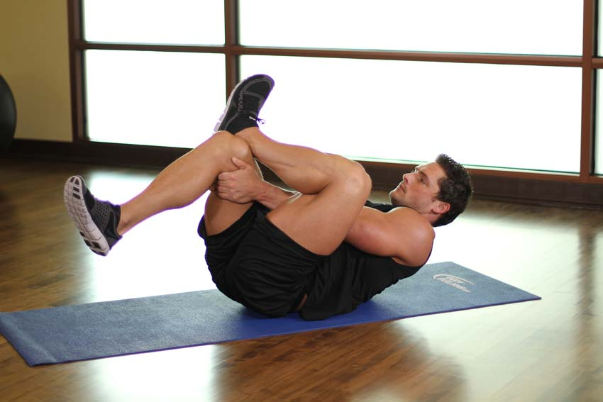
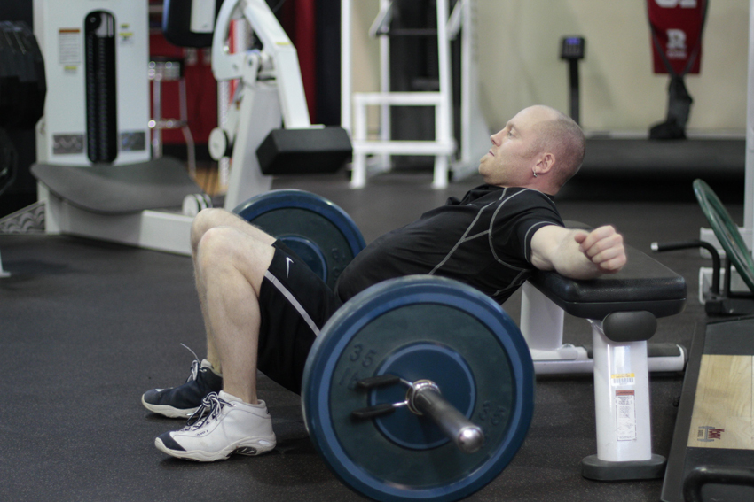
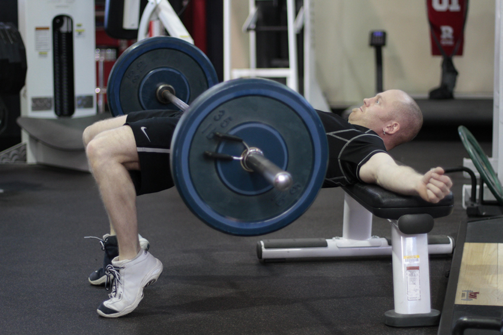
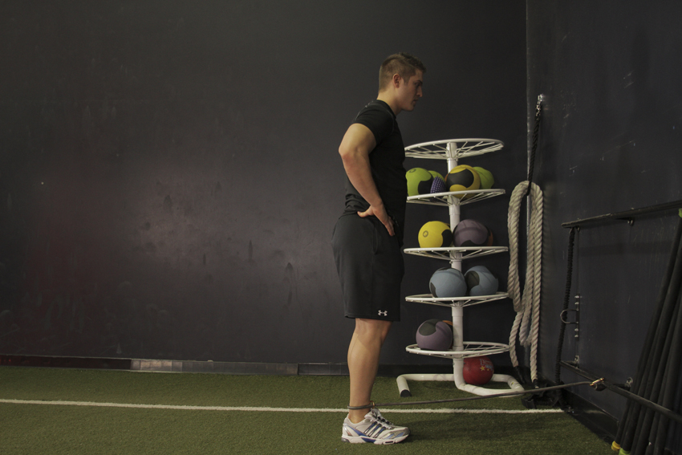
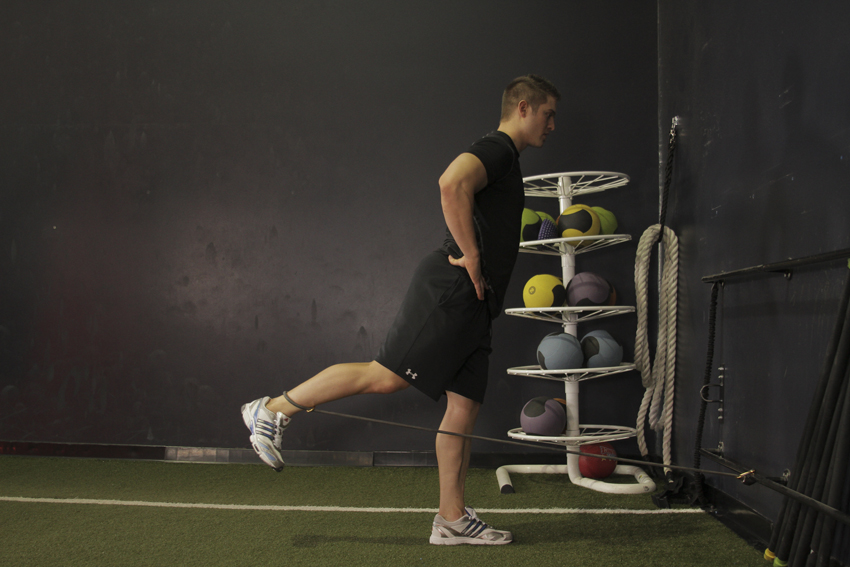
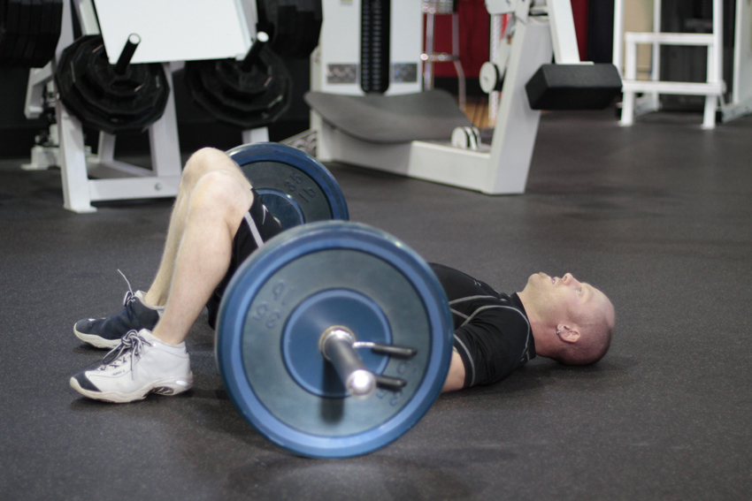
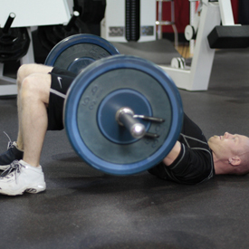

<!DOCTYPE html PUBLIC "-//W3C//DTD XHTML 1.0 Strict//EN" "http://www.w3.org/TR/xhtml1/DTD/xhtml1-strict.dtd">
<!--
Design by Free CSS Templates
http://www.freecsstemplates.org
Released for free under a Creative Commons Attribution 2.5 License

Name       : Open-Air
Description: A two-column, fixed-width design with dark color scheme.
Version    : 1.0
Released   : 20120818

-->
<html xmlns="http://www.w3.org/1999/xhtml"/>
<?php
session_start();
include('mygymdbConnect.php');
include('SignUp.php');
?>
<html>
    <head>
        <title> MyGym</title>
        <div style="position :absolute;top:20px;left:40px">
            <p><h2>MY<br/> 
                    GYM 
                    <br/></h2></p></div>
        <div style="position: absolute ;left:  200px; top: 20px;"> </div>
        <div style="position:absolute;top:37%;left:35%"/>
        <link href="http://fonts.googleapis.com/css?family=Oswald:400,300" rel="stylesheet" type="text/css" />         

        <link href="style.css" rel="stylesheet" type="text/css" media="screen" />
        <a href="home.php" style="text-decoration: none;color: black;font:serif;font-weight: bold;  ">Home |</a>
        <a href="About.html" style="text-decoration: none;color: black;font:serif;font-weight: bold;  ">About |</a>
        <a href="sign up.html" style="text-decoration: none;color: black;font:serif;font-weight: bold;  ">Sign up |</a>
        <a href="Activities.html" style="text-decoration: none;color: black;font:serif;font-weight: bold;  ">Activities |</a>
        <a href="Trainers.html" style="text-decoration: none;color: black;font:serif;font-weight: bold;  ">Trainers |</a>
        <a href="classes.html" style="text-decoration: none;color: black;font:serif;font-weight: bold;  ">Classes |</a>
        <a href="Training.html" style="text-decoration: none;color: black;font:serif;font-weight: bold;  ">Train |</a>   

    </head>

    <body>
        <div style="position: absolute;left: -300px">
            <table  cellpadding="10" cellspacing="10" height="400px" width="1200px">
                <tr><td></img></td>
                    <td><b>Description</b><br></br>The gluteus maximus is the largest of the gluteal muscles and one of the strongest muscles in the human body. It inserts at the iliotibial band and the gluteal tuberosity of the femur. Its action is to extend and to laterally rotate the hip, and also to extend the trunk.
                    </td>
                </tr>
            </table></div>
        <div style="position: absolute;left: -200px;top: 500px" >
            <table border="2"  cellpadding="10" cellspacing="10" align="center" >
                <tr><td><b>EXERCISES</b></td></tr>
                <tr><td></img></br>
                        </img></td>
                    <td><b>Ankle On The Knee</b>
                        </br>1-From a lying position, bend your knees and keep your feet on the floor.
                        </br>2-Place your ankle of one foot on your opposite knee.
                        </br>3-Grasp the thigh or knee of the bottom leg and pull both of your legs into the chest. Relax your neck and shoulders. Hold for 10-20 seconds and then switch sides.
                    </td>
                </tr>
                <tr><td></img></br>
                        </img></td>
                    <td><b>Barbell Hip Thrust</b>
                        </br>1-Begin seated on the ground with a bench directly behind you. Have a loaded barbell over your legs. Using a fat bar or having a pad on the bar can greatly reduce the discomfort caused by this exercise.
                        </br>2-Roll the bar so that it is directly above your hips, and lean back against the bench so that your shoulder blades are near the top of it.
                        </br>3-Begin the movement by driving through your feet, extending your hips vertically through the bar. Your weight should be supported by your shoulder blades and your feet. Extend as far as possible, then reverse the motion to return to the starting position.
                    </td>
                </tr>
                <tr><td></img></br>
                        </img></td>
                    <td><b>Hip Extension with Bands</b>
                        </br>1-Secure one end of the band to the lower portion of a post and attach the other to one ankle.
                        </br>2-Facing the attachment point of the band, hold on to the column to stabilize yourself.
                        </br>3-Keeping your head and your chest up, move the resisted leg back as far as you can while keeping the knee straight.
                        </br>4-Return the leg to the starting position.
                    </td>
                </tr>
                <tr><td></img><br></br>
                        </img>  </td>
                    <td><b>Barbell Glute Bridge</b>
                        </br>1-Begin seated on the ground with a loaded barbell over your legs. Using a fat bar or having a pad on the bar can greatly reduce the discomfort caused by this exercise. Roll the bar so that it is directly above your hips, and lay down flat on the floor.
                        </br>2-Begin the movement by driving through with your heels, extending your hips vertically through the bar. Your weight should be supported by your upper back and the heels of your feet.
                        </br>3-Extend as far as possible, then reverse the motion to return to the starting position.
                    </td>
                </tr>
            </table>
        </div>
    </body>
</html>